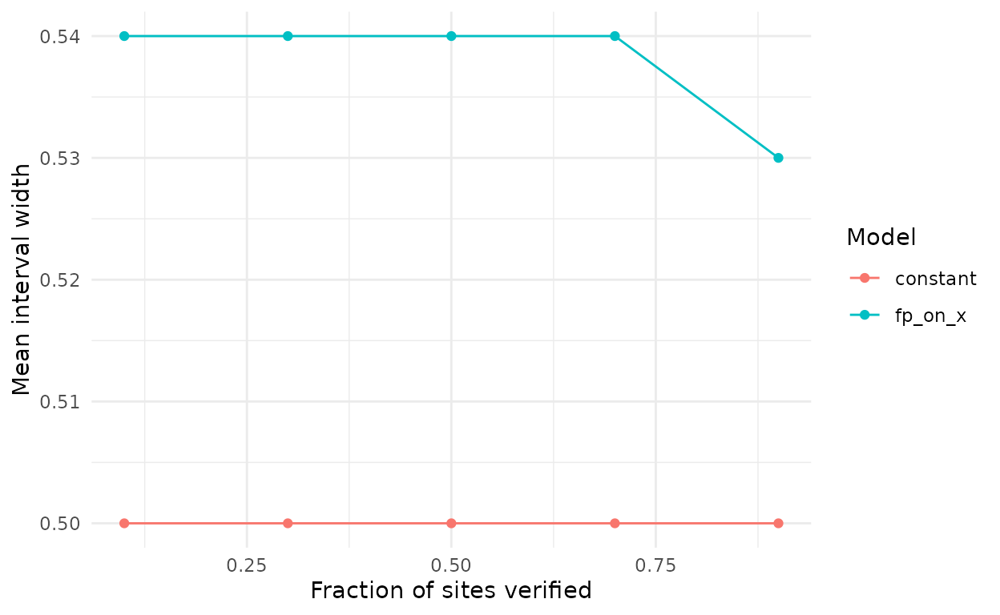

Before recording starts, three decisions shape what a false-positive occupancy analysis can deliver: how many sites and occasions, how much to check by hand, and what to assume about the classifier. This article walks through the tools in crywolf that inform those decisions, in the order in which they are usually needed. None of them needs real data; a pilot, the literature, or a guess stated openly is enough.
1. What the classifier is likely to do
The false-positive rate is identified by the checked data, but the
gap between the true-detection and false-positive intercepts also has a
prior (vignette("crywolf")). When a random sample of
detections from a pilot or an earlier study was reviewed, its precision,
the share of detections that were true, says roughly where the gap lies.
fp_gap_prior() turns the counts into a prior, given rough
values of the detection probability at occupied sites and of
occupancy:
set.seed(1)
pr <- fp_gap_prior(n_true = 46, n_false = 4, p11 = 0.6, psi = 0.5)
pr
#> <fp_priors> (logit scale)
#> intercepts ~ Normal(0, 1.5)
#> slopes ~ Normal(0, 2.5)
#> fp_gap ~ Normal(3.58586, 0.490575), truncated at 0
#> sd_recorder ~ half-Normal(0, 2)
#> sd_fp_site ~ half-Normal(0, 1)The sample must be random among the detections at the threshold you will use. Detections picked for their high scores overstate the precision and push the prior towards a classifier that errs less than it does.
2. What the priors imply for the planned design
A planned design can be written as a simulation:
simulate_fp() takes the number of sites, occasions, and
verified sites, and plausible rates. With it,
fp_prior_predictive() draws parameter values from the
priors and shows the data they would produce, before anything is
fitted.
plan <- simulate_fp(nsite = 200, nocc = 10, frac_verified = 0.3, seed = 1)
pp <- fp_prior_predictive(plan$data, occ = ~ x, fp = ~ 1,
random_recorder = FALSE, priors = pr,
ndraws = 200, seed = 1)
pp
#> Prior predictive check (200 draws)
#>
#> summary q05 median q95 observed share_below_observed
#> naive_occupancy 0.2050 0.6675 0.995 0.705 0.545
#> automated_rate 0.0382 0.2777 0.706 0.333 0.590
#> verified_rate 0.0214 0.2101 0.601 0.370 0.725
#> mean_psi 0.1398 0.4972 0.871 NA NA
#> p10_bar 0.0022 0.0296 0.321 NA NA
#>
#> Observed values near 0 or 1 in `share_below_observed` sit in the tails of the prior predictive distribution.The columns are the share of sites with at least one automated detection, the share of automated occasions that are detections, and the share of verified occasions that are detections. If the plausible values for your system sit in the tails of these distributions, the priors are at odds with what you expect, and it is better to find out now.
3. Whether the design can answer the question
The core risk is a false-positive rate that tracks the same gradient
as occupancy, which biases the occupancy effects (Provete et al., in
preparation). fp_verification_curve() simulates that
situation for the design at hand, fits the candidate models, and scores
how often their intervals contain the true slope.
vignette("calibration") describes the output; here we use
its saved results to read off two things a plan needs: the precision to
expect and the computing cost.
v <- as.data.frame(results$verification)
v <- v[v$parameter == "occ_x", ]
width <- stats::aggregate(cbind(width = upper - lower) ~ model + frac_verified, v, mean)
width$width <- round(width$width, 2)
width
#> model frac_verified width
#> 1 constant 0.1 0.50
#> 2 fp_on_x 0.1 0.54
#> 3 constant 0.3 0.50
#> 4 fp_on_x 0.3 0.54
#> 5 constant 0.5 0.50
#> 6 fp_on_x 0.5 0.54
#> 7 constant 0.7 0.50
#> 8 fp_on_x 0.7 0.54
#> 9 constant 0.9 0.50
#> 10 fp_on_x 0.9 0.53
Mean width of the 95% interval of the occupancy slope against the fraction of sites verified, in 300 sites with 20 occasions and a false-positive rate that tracks the occupancy gradient (effect 1.5, correlation 0.7).
In this design, verifying more sites hardly changes the width of the interval of the slope, and the calibration results show that it does not remove the bias of the constant-rate model either. Modelling the rate on the occupancy covariate gives slightly wider intervals, the price of the extra parameter, but intervals that cover the true slope far more often (0.46 to 0.68 of the time, against 0.08 to 0.22 for the constant rate). A plan that relies on verification alone to deal with a confounded false-positive rate will not work.
secs <- stats::median(as.data.frame(results$verification)$seconds)
n_fits <- nrow(unique(as.data.frame(results$verification)[c("cell", "model", "rep")]))
c(fits = n_fits, median_seconds_per_fit = round(secs))
#> fits median_seconds_per_fit
#> 500 17Each of these fits used 4 chains of 1000 warm-up and 1000 sampling
iterations, run one after another inside each of 8 parallel workers. A
run of this size therefore costs about 0.3 hours of wall time on 8
cores. Two chains per fit halve that, with an effective sample size that
is still ample for scoring intervals (see
?fp_calibrate).
4. Choices that are cheap to make now
-
Occasions. Shorter occasions (minutes instead of
nights) give more data per site but are more likely to come in runs,
when a calling animal is recorded in consecutive minutes. Plan to record
the time of each occasion, so that runs can be modelled
(
vignette("markov")). -
What to measure. A covariate that might drive false
positives, such as background noise or another species that the
classifier confuses with the target, is worth recording even if
occupancy does not depend on it. It can enter the false-positive formula
later (
vignette("fp_variation")). -
How to check. Whole-recording annotation (the
multiple-methods design) and checking flagged clips (the confirmation
design) need different files;
vignette("birdnet_workflow")shows both. Draw the checked recordings or clips at random. - Recorders. If several recorders are used, keep track of which one made each recording, so that differences among them can be modelled as a random effect.
5. After the data are in
Once a model is fitted to the real data,
fp_calibrate_fit() repeats the check of step 3 with the
sites, covariates, and verification that were actually obtained, and
with the effect sizes the fit estimated
(vignette("calibration")). It answers the question of step
3 for the study that was done rather than the one that was planned.